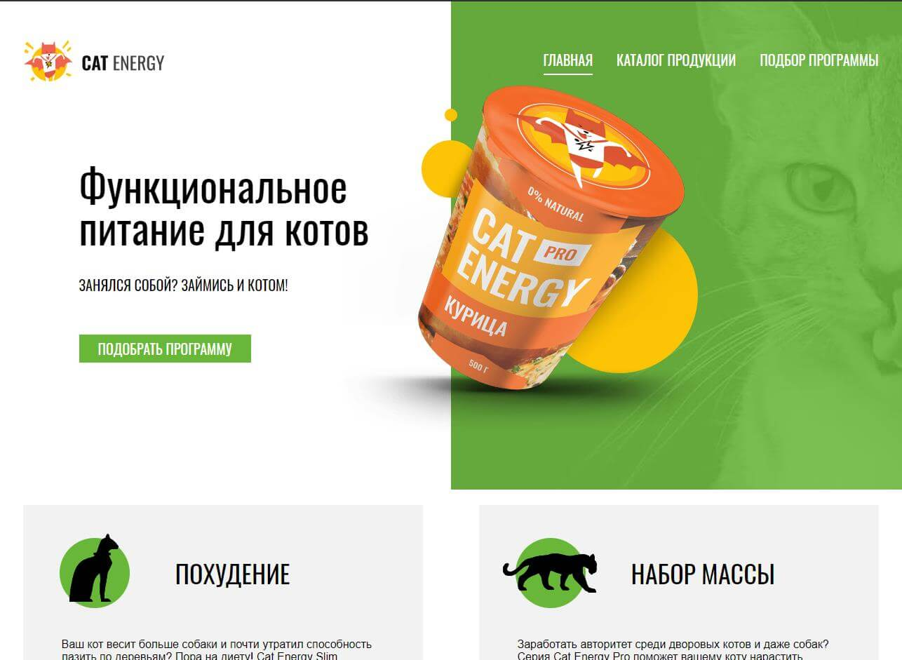
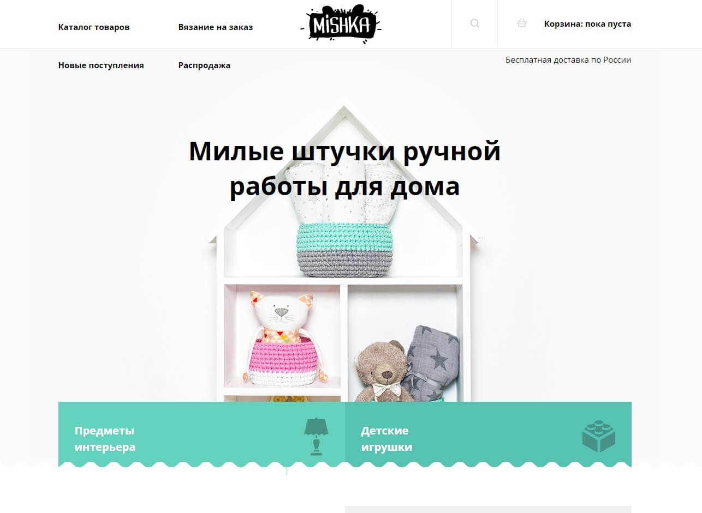
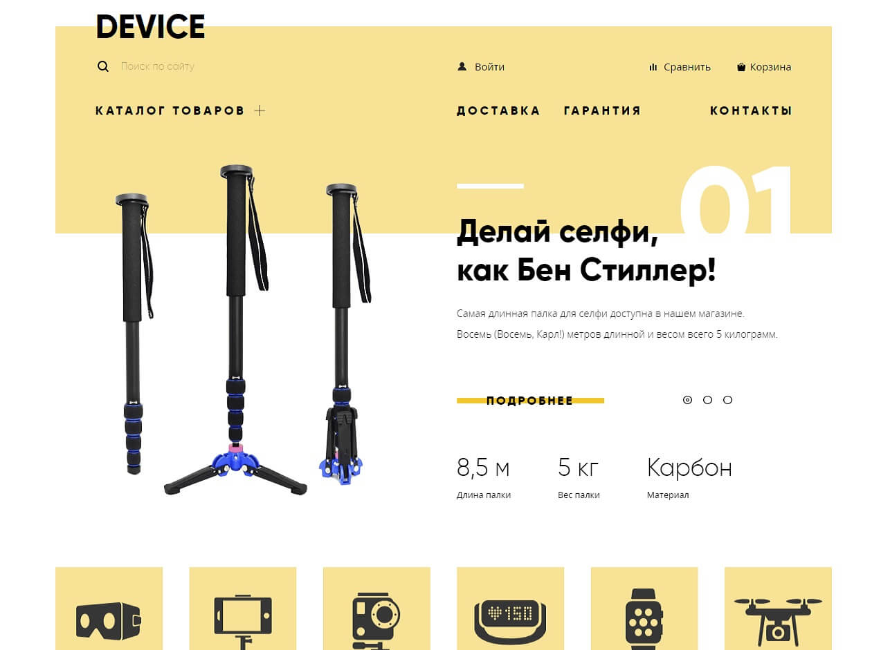

Обо мне
Путь в веб я начал поздно, в 30 лет. Первым местом, где получал знания, была HTML Academy. Прошел начальные курсы по Html, Css и немного JS. В дальнейшем понял, что их методика обучения не совсем мне подходит и продолжил обучаться самостоятельно. Купил книгу (новая большая книга по CSS) и при помощи интернета и начал писать небольшие лендинги. В дальнейшем захотел их немного оживить и в связи с этим погрузился в JS. Первое время читал документацию на learn.javascript, mdn, потом посоветовали курсы на Hexlet. На них и остановился. Сейчас к JS подключил React, чтобы лучше понимать основы языка, так как он там неплохо зайдействован, да и сам фреймворк понравился. В ближаийших планах выучить PHP и React Native.
-
Мои знания:
Html5 CSS3 Sass JavaScript React JQuery Gulp Git -
Что использую в работе:
Visual Studio Code WebStorm Photoshop Adobe XD Lunacy Cmder
Портфолио
-

Небольшой трехстраничный сайт магазина с едой для кошек. Адаптивен под мобильные телефоны и планшеты. В каталоге реализованна подгрузка еды по кнопке "Показать ещё".
-

Адаптивный сайт, построенный с использованием Html5, css3(Sass), JS. Три страницы: основная, страница с каталогом и страница с заказом.
-

Один из первых проектов с использованием jQuery. Карусель топ товаров и фильтр стоимости реализован на jquery. Две страницы: основная и каталог с моноподами. Адаптации под мобильные устройства отсутсвуют.